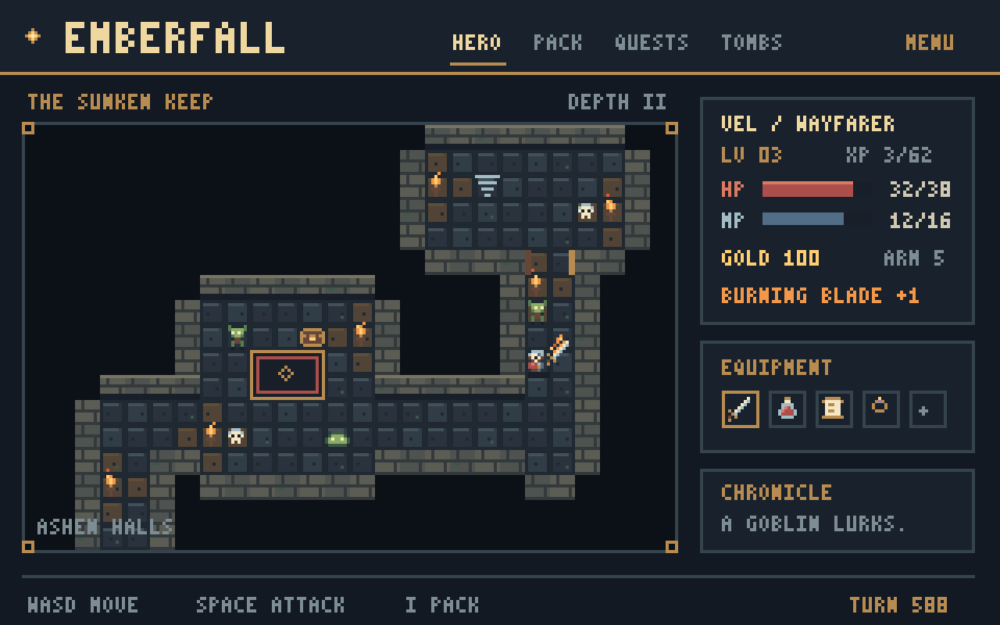
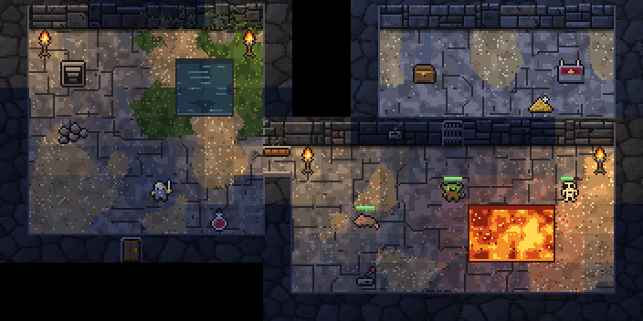
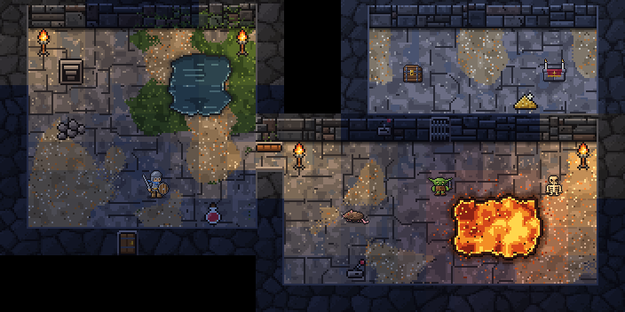
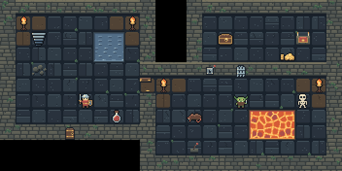

Where it started


The first screen of the game, before the Roster: a lone hero at a campfire under the night sky, the monsters waiting where the light ends, the title, and the menu. Three concepts, none chosen yet, and none of it is in the game. Each one is live: click it, walk the menu with the arrow keys, and Enter or a click says what a row opens.

A forest clearing at night: the lone hero by a campfire, the City far behind on its hill, and at the edge of the firelight, under the dark trees, goblins, a wolf and the Goblin King waiting.
Arrow keys walk the menu · Enter or a click picks · F: full screen
The game still paints every tile in code while its first real pixel art is drawn. These are the looks that were tried, each one drawing the same test room. On 25 October 2026 Torchlit, 16×16, with its hero drawn at 32×32, was chosen as the game's art; the looks set aside are in the archives at the bottom. Click a look to see its tiles one by one and every version of it so far.




Looks that were tried and set aside. They stay here so the choice can be seen.




Mini Medieval art by VEXED, v3x3d.itch.io/mini-medieval, CC BY 4.0.